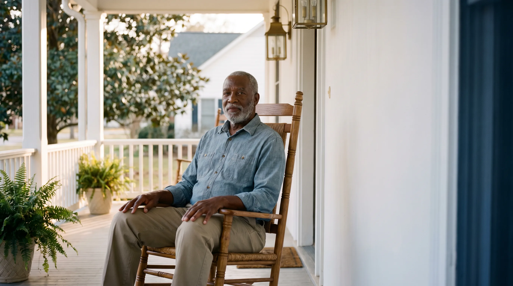
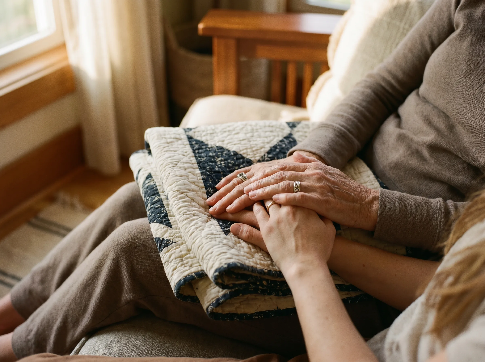
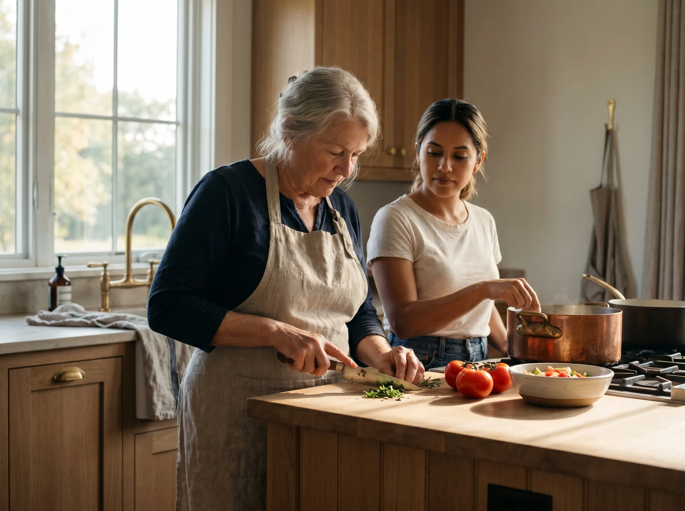
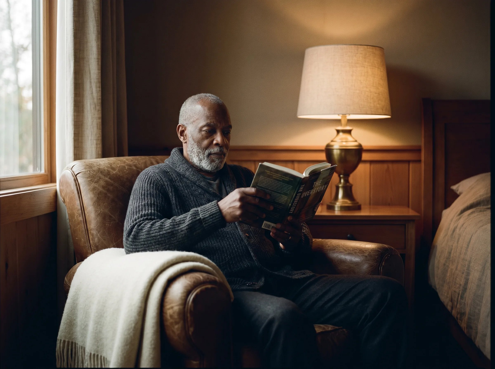
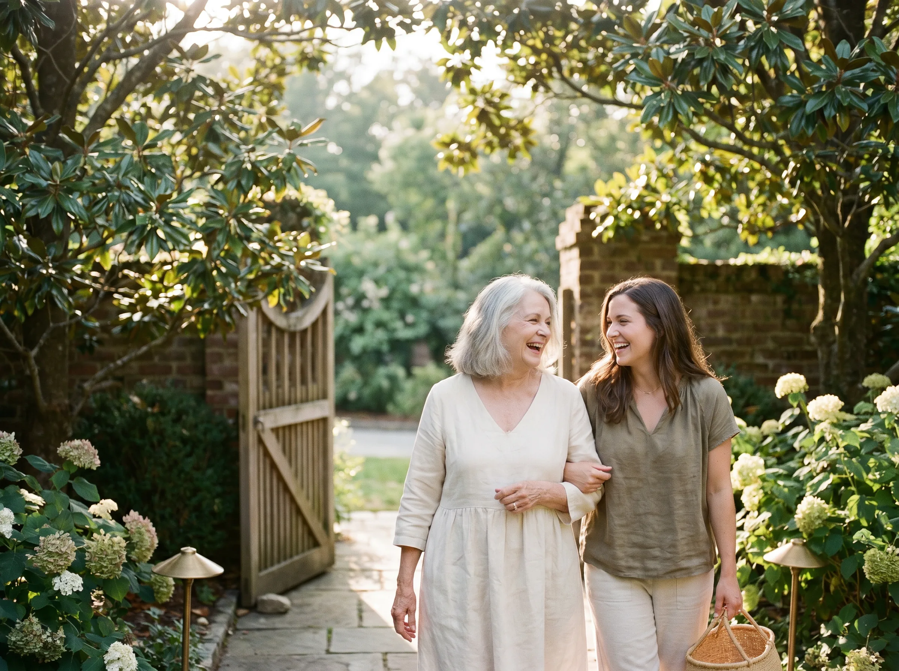
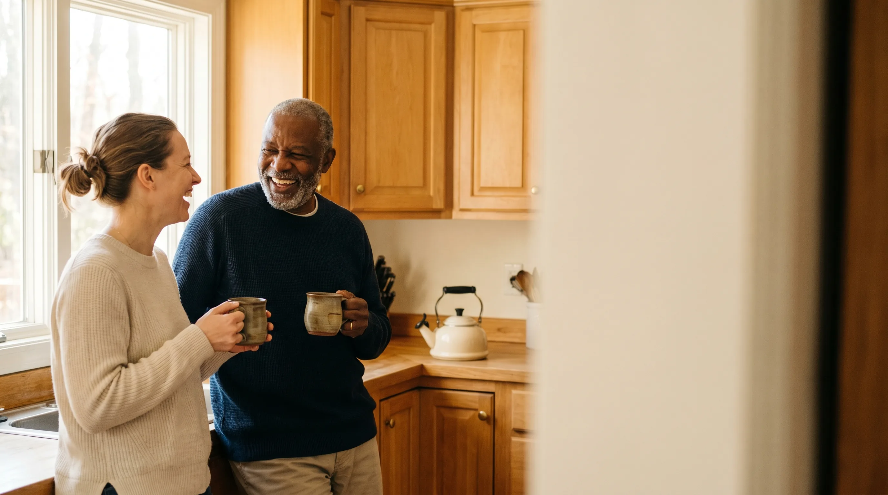

J.A.P
Senior
Services.
A new home online.

What you asked us for.
Clean, professional, easy to navigate. More modern. More luxurious. Easy for seniors to use.
Four principles
we designed against.
Every decision in this design traces back to one of these four. When two pulled against each other, we let these decide.
Editorial over clinical.
We dressed the site like a wellness brand, not a hospital. Senior care deserves the dignity of a magazine.
Big and breathable.
Larger type, more whitespace, fewer choices per screen. Easier to use at any age — but especially this one.
Photography does
the heavy lifting.
Warm, human, intergenerational. No stock medical imagery. Every photo earns its space.
One CTA per moment.
Visitors never have to choose between five buttons. We guide one decision at a time.
A palette built for
warmth and trust.
We built the palette around the navy your brand already owns — a colour that signals trust, calm, and clinical competence — then paired it with a warm brass for the moments of human warmth. Ivory replaces pure white throughout to soften the screen for older eyes.
Editorial type.
Sized for everyone.
Fraunces gives the brand a literary character without feeling old-fashioned. Inter at 18px (a point larger than the industry default) is the most readable sans on the web — important because the average reader is between 55 and 80 years old, or their adult child reading on their behalf.
respect.
Family-owned, in-home senior care across Alabama. Twenty-five years of helping loved ones live well — on their own terms, in their own home.
A care plan designed around the routines your loved one already keeps. Built with our on-staff Registered Nurse, adjusted with the seasons, paid for month-to-month with no long contracts.
A wordmark that holds
the family inside it.
The full stops between J·A·P are deliberate — a measured pace, a name you can read aloud. Senior Services beneath it, letterspaced and quiet, framing the family name like a plaque.
Seven pages.
One clear journey.
The current site is a single page. We've grown it to seven — one for every step of a family's decision, from learning about you to scheduling a consultation.
A more fulfilling life.
Everything they need,
in the order they need it.
A scannable spine — seven moments, each earning the scroll to the next.
- 01Hero with the phone number.The number visible before the family even scrolls.
- 02Trust strip — credentials in four seconds.Years, programs, RN, family-owned.
- 03Six featured care programs.The most-requested. Link to all nine.
- 04Our family story.A short preview of the Ethel dedication.
- 05How it works in three steps.A free consult. A plan. Care that grows.
- 06Family stories.Real voices, clearly placeholdered today.
- 07Final CTA — call or request.The page ends where it started: in conversation.
- Help with dressing and grooming
- Bed-making and light tidy
- Medication reminder
- Escort to breakfast
Nine programs.
One easy page.
We placed all nine programs on a single page with a sticky anchor menu. Comparison is effortless — no clicking back and forth, no losing your place.
From the first call
to ongoing care.
Borrowed in spirit from a self-assessment, but warmer — a conversation, not a form. Four discrete steps. Each one human-paced.
A free consultation.
~30 minutes, by phone. With our on-staff RN if helpful. No script, no obligation.
A home assessment.
~1 hour, in your loved one's home. Mobility, safety, routines, the small frictions that wear families down.
A care plan, tailored.
Built from any of the nine programs. Revisable. Written down. Mailed to you within a few days.
Ongoing care.
Same caregivers, monthly RN check-ins, no long contracts. The plan grows with the family.
No 17-question quiz. No "score your readiness." Just the four conversations every family will have with us anyway, sequenced.
Designed phone-first.
Built for big tap targets.
More than half of family members research senior care on a phone. We made the small screen the default — and the desktop the variant.
Designed for the
people we serve.
Accessibility is not an audit at the end. It's the brief — the average reader of this site is between 55 and 80, or their adult child on a phone. We designed for them first.
Subtle motion.
Never distracting.
Every motion has a purpose. We never animate for the sake of animating.
Text and cards rise 12px as they enter the viewport. 400ms ease-out.
Links grow a hairline from 0 to 100% width on hover. 250ms.
Header trims by 12px on scroll. Quietly gives more space to the content.
Photographs fade in over 600ms after their headline lands.
Warm. Human. Earned.
Custom-generated for J.A.P. using AI image generation — same aesthetic across every screen, exclusive to your brand. No stock photos. Every shot below is real, sitting on the live site today.

Hands holding hands
Kitchen-table breakfast
Quiet evening lamp
Garden walk
Caregiver and senior, laughingMood board references the editorial direction. Six tiles, six moments — none clinical.
What we kept.
What we elevated.
The benchmark gave us the information architecture. We borrowed the clarity. We left the aesthetics behind.
Three steps to launch.
All copy on the site is drawn from your existing content. We've kept every fact and rewritten the prose to match the brand. You read it next; we refine; we ship.
You approve the design.
Walk through the prototype. Flag what feels off. We refine until you're proud to send the link.
We build it in Elementor.
WordPress + Elementor, free tier. Every component is editable by your team forever, without a developer.
You launch.
We train your team on updating content, swapping photography, posting stories. We stay on call for 30 days.
The path from this deck to a live site is five weeks. Most clients tell us it felt like one conversation.
Home Care VA Solutions
Tailored to You.
Designed by people
who know home care.
TaskFlo VA was founded by Coach Michele and Coach Rob to serve home-care agencies specifically. We understand HIPAA. We understand the operational realities of running a senior-care business — payroll, scheduling, RN coverage, family liaison work.
We design websites that convert because we know what families ask before they call, and we write the page that answers them. Most of our clients see their first inbound lead within 48 hours of launch.